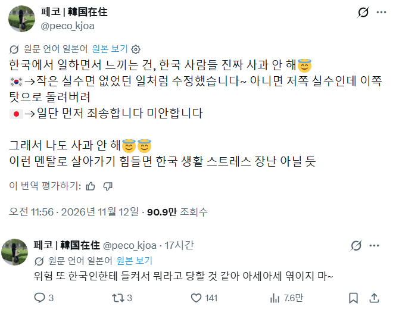
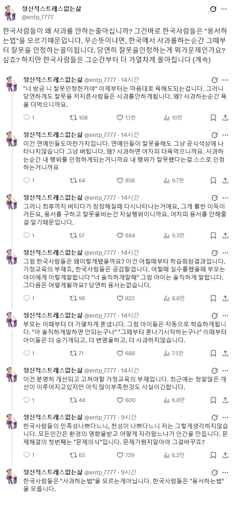
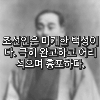

한국인들은 절대 사과를 안한다. 일본에서는 일단 미안합니다 부터 먼저 나오고 다른말이 나온다.
그런데 한국은 무슨 잘못이 일어나도 사과를 안하고 없던것처럼 굴던가 남탓으로 여기곤 한다.
그래서 나도 한국에서는 사과 안하기로 함.
그리고 그에 대해 어떤 사람이 일본인에게 해주는 말...

아니다. 한국인들은 정확히 "사과하는 법" 을 모르는게 아니다. 근본적으로 "용서하는 법" 을 모르는거다. 라고 함...
그리고 그 용서를 안한다는데에 대한 문제의식을 거의 가지고 있지 않는다고...

댓글
수집 당시 댓글 950개
· ㅇㅇ · 11.15 12:54:46
· ㅇㅇ · 11.15 14:26:47
ㅇㅇ · 11.15 12:34:44
ㅇㅇ · 11.15 12:35:33
ㅇㅇ · 11.15 12:35:46
ㅇㅇ · 11.15 12:38:29
· ㅇㅇ · 11.15 12:38:38
000 · 11.15 12:39:53
ㅇㅇ · 11.15 12:40:27
ㅇㅇ · 11.15 12:41:00
ㅇㅇ · 11.15 12:41:45
ㅇㅇ · 11.15 12:41:56
000 · 11.15 12:47:49
ㅇㅇ · 11.15 12:49:45
ㅇㅇ · 11.15 12:50:25
ㅇㅇ · 11.15 12:52:57
ㅇㅇ · 11.15 12:56:41
· ㅇㅇ · 11.15 12:57:21
ㅇㅇ · 11.15 12:58:26
ㅇㅇ · 11.15 13:00:36
ㅇㅇ · 11.15 13:01:52
분탕 · 11.15 13:04:14
ㅇㅇ · 11.15 13:07:08
ㅇㅇ · 11.15 13:07:29
ㅇㅇ · 11.15 13:10:34
LoLHistory · 11.15 13:12:00
ㅇㅇ · 11.15 13:16:15
ㅇㅇ · 11.15 13:17:06
서울시 · 11.15 13:19:32
ㅇㅇ · 11.15 13:20:56
dridgee · 11.15 13:22:35
시노노메우미 · 11.15 13:28:15
· ㅇㅇ · 11.15 13:36:44
ㅇㅇ · 11.15 13:31:04
ㅇㅇ · 11.15 13:36:53
스마라딘 · 11.15 13:46:51
ㅇㅇ · 11.15 13:47:41
income2746 · 11.15 13:49:30
ㅇㅇ · 11.15 13:51:52
ㅇㅇ · 11.15 14:00:31
· ㅇㅇ · 11.15 14:00:43
· ㅇㅇ · 11.15 14:03:31
· ㅇㅇ · 11.15 14:05:29
· ㅇㅇ · 11.15 14:06:56
· ㅇㅇ · 11.15 14:09:48
· ㅇㅇ · 11.15 14:14:42
· ㅇㅇ · 11.15 14:24:01
· ㅇㅇ · 11.15 14:34:00
ㅇㅇ · 11.15 14:01:34
ㅇㅇ · 11.15 14:03:17
ㅇㅇ · 11.15 14:06:19
ㅇㅇ · 11.15 14:10:09
ㅇㅇ · 11.15 14:10:10
ㅇㅇ · 11.15 14:11:55
ㅇㅇ · 11.15 14:15:23
ㅇㅇ · 11.15 14:16:32
· ㅇㅇ · 11.15 14:22:50
ㅇㅇ · 11.15 14:20:00
ㅇㅇ · 11.15 14:20:43
· ㅇㅇ · 11.15 14:23:48
ㅇㅇ · 11.15 14:21:46
김제동 · 11.15 14:22:02
ㅇㅇ · 11.15 14:23:24
· ㅇㅇ · 11.15 14:41:17
dyin · 11.15 14:27:40
ㄴㄴ · 11.15 14:29:51
ㅇㅇ · 11.15 14:31:58
· ㅇㅇ · 11.15 14:32:50
ㅇㅇ · 11.15 14:32:57
ㅇㅇ · 11.15 14:36:31
ㅇㅇ · 11.15 14:38:18
불편한팩트 · 11.15 14:39:50
ㅇㅇ · 11.15 14:40:22
ㅇㅇ · 11.15 15:03:58
ㅇㅇ · 11.15 15:05:12
ㅇㅇ · 11.15 15:09:14
ㅇㅇ · 11.15 15:11:39
ㅇㅇ · 11.15 15:13:19
ㅇㅇ · 11.15 15:14:07
악어 · 11.15 15:18:25
· 악어 · 11.15 15:22:41
· ㅇㅇ · 11.15 15:25:33
Shokaku · 11.15 15:33:32
. · 11.15 15:35:08
DLight · 11.15 15:39:33
ㅇㅇ · 11.15 15:42:07
ㅇㅇ · 11.15 15:42:43
ㅇㅇ · 11.15 15:50:00
시발 · 11.15 15:54:04
ㅇㅇ · 11.15 15:54:42
ㅇㅇ · 11.15 16:02:52
ㅇㅇ · 11.15 16:05:25
ㅇ · 11.15 16:06:32
ㅇㅇ · 11.15 16:06:39
노은지 · 11.15 16:09:26
ㅇㅇ · 11.15 16:11:21
ㅇㅇ · 11.15 16:21:10
ㅇㅇ · 11.15 16:23:58
ㅇㅇ · 11.15 16:26:13
ㅇㅇ · 11.15 16:31:33
ㅇㅇ · 11.15 02:27:14
ㅇㅇ · 11.15 02:28:15
· 호랑이 · 11.15 11:55:35
· ㅇㅇ · 11.15 12:35:12
ㅇㅇ · 11.15 02:31:24
조센징
주소킹 · 11.15 02:45:16
ㅇㅇ · 11.15 02:56:50
· ㅇㅇ · 11.15 02:58:39
· ㅇㅇ · 11.15 03:15:51
· ㅇㅇ · 11.15 03:27:04
· ㅂ · 11.15 11:10:40
· 설탕물 · 11.15 12:48:49
ㅇㅇ · 11.15 03:04:05
ㅇㅇ · 11.15 03:24:03
ㅇㅇ · 11.15 03:30:22
ㅇㅇ · 11.15 03:34:34
ㅇㅇ · 11.15 03:45:41
또한녀냐
ㅇㅇ · 11.15 03:54:28
ㅇㅇ · 11.15 03:58:16
ㅇㅇ · 11.15 04:00:45
ㅇㅇ · 11.15 04:29:52
· ㅇㅇ · 11.15 04:37:08
· ㅇㅇ · 11.15 12:17:13
ㅇㅇ · 11.15 04:46:18
ㅇㅇ · 11.15 04:59:28
ㅇㅇ · 11.15 05:00:48
ㅇㅇ · 11.15 05:00:55
ㅇㅇ · 11.15 05:11:15
ㅇㅇ · 11.15 05:31:32
ㅇㅇ · 11.15 06:05:33
· ㅇㅇ · 11.15 06:06:30
배구공 · 11.15 06:13:29
ㅇㅇ · 11.15 06:38:28
ㅇㅇ · 11.15 06:42:03
· 새벽에글쓰다가 · 11.15 12:56:35
ㅇㅇ · 11.15 07:04:51
ㅇㅇ · 11.15 07:06:05
ㅇㅇ · 11.15 07:12:49
· ㅇㅇ · 11.15 07:59:52
· ㅇㅇ · 11.15 08:48:00
· ㅇㅇ · 11.15 09:58:07
· ㅇㅇ · 11.15 10:18:46
· ㅇㅇ · 11.15 10:23:25
· ㅇㅇ · 11.15 13:35:04
ㅇㅇ · 11.15 07:32:56
ㅇㅇ · 11.15 07:58:27
· ㅇㅇ · 11.15 07:59:37
ㅇㅇ · 11.15 08:07:25
ㅇㅇ · 11.15 08:07:25
· ㅇㅇ · 11.15 12:16:25
ㅇㅇ · 11.15 08:12:17
ㅇㅇ · 11.15 08:16:37
ㅇㅇ · 11.15 08:17:05
ㅇㅇ · 11.15 08:29:25
ㅇㅇ · 11.15 08:39:46
ㅇㅇ · 11.15 08:49:37
· ㅇㅇ · 11.15 12:39:50
ㅇㅇ · 11.15 09:05:51
ㅁㄴㅇㄹ · 11.15 09:14:05
· ㅁㄴㅇㄹ · 11.15 09:16:41
· ㄴㄴ · 11.15 12:07:22
ㅇㅇ · 11.15 09:19:38
ㅇㅇ · 11.15 09:27:36
ㅇㅇ · 11.15 09:27:50
· ㅇㅇ · 11.15 12:44:30
ㅇㅇ · 11.15 09:44:08
192.168.* · 11.15 09:53:03
· ㅇㅇ · 11.15 12:48:35
ㅇㅇ · 11.15 09:56:29
ㅇㅇ · 11.15 09:58:47
ㅇㅇ · 11.15 10:07:24
ㅇㅇ · 11.15 10:07:42
ㅇㅇ · 11.15 10:30:49
· ㅇㅇ · 11.15 10:46:11
· ㅂ · 11.15 11:13:43
· ㅇㅇ · 11.15 14:25:49
Gloved 1 · 11.15 10:38:57
ㅇㅇ · 11.15 11:04:17
ㅇㅇ · 11.15 11:18:13
꼴갤러 · 11.15 11:43:53
· 너는ㅄ이맞습니다 · 11.15 11:54:20
· ㅇㅇ · 11.15 15:09:35
레이먼드 · 11.15 11:48:53
너는ㅄ이맞습니다 · 11.15 11:53:45
ㅇㅇ · 11.15 12:06:47
ㅇㅇ · 11.15 12:10:07
ㅇㅇ · 11.15 12:11:29
ㅇㅇ · 11.15 12:15:19
ㅇㅇ · 11.15 12:16:32
단밤 · 11.15 12:16:33
ㅇㅇ · 11.15 12:17:55
ㅇㅇ · 11.15 12:21:07
ㅇㅇ · 11.15 12:23:00
· ㅇㅇ · 11.15 12:29:41
ㅇㅇ · 11.15 12:23:32
ㅇㅇ · 11.15 12:24:32
Zintp_찐팁 · 11.15 12:29:16
ㅇㅇ · 11.15 12:30:38
ㅇㅇ · 11.15 12:30:40
ㅇㅇ · 11.15 12:31:50
ㅇㅇ · 11.14 23:36:23
· ㅇㅇ · 11.14 23:39:57
· ㅇㅇ · 11.14 23:48:33
ㅇㅇ · 11.14 23:39:42
· ㅇㅇ · 11.15 04:17:38
ㅇㅇ · 11.14 23:45:25
환란 전 교회 휴거 · 11.14 23:48:20
ㅇ · 11.14 23:48:24
ㅇㅇ · 11.14 23:49:06
ㅇㅇ · 11.14 23:49:09
ㅇㅇ · 11.14 23:49:43
ㅇㅇ · 11.14 23:50:11
ㅇㅇ · 11.14 23:51:42
ㅇㅇ · 11.14 23:52:58
ㅇㅇ · 11.14 23:55:40
2456778 · 11.14 23:57:24
· ㅇㅇ · 11.15 05:33:10
2456778 · 11.14 23:57:33
ㅇㅇ · 11.14 23:57:57
ㅇㅇ · 11.14 23:58:47
· ㅇㅇ · 11.14 23:58:52
ㅇㅇ · 11.14 23:58:53
ㅇㅇ · 11.15 00:02:16
ㅇㅇ · 11.15 00:04:28
나거한개센징 · 11.15 00:05:47
· 나거한개센징 · 11.15 00:06:02
· 나거한개센징 · 11.15 00:06:25
· 나거한개센징 · 11.15 00:06:38
ㅇㅇ · 11.15 00:10:58
ㅇㅇ · 11.15 00:11:08
· ㅇㅇ · 11.15 06:33:26
ㅇㅇ · 11.15 00:13:34
깡 · 11.15 00:15:45
· ㅇㅇ · 11.15 00:37:54
· ㅇㅇ · 11.15 07:04:21
ㅇㅇ · 11.15 00:16:20
ㅇㅇ · 11.15 00:17:07
ㅇㅇ · 11.15 00:19:27
· ㅇㅇ · 11.15 00:20:28
ㅇㅇ · 11.15 00:22:02
ㅇㅇ · 11.15 00:22:13
ㅇㅇ · 11.15 00:28:41
· ㅇㅇ · 11.15 00:34:06
ㅇㅇ · 11.15 00:32:17
ㅇㅇ · 11.15 00:36:47
ㅇㅇ · 11.15 00:39:18
ㅇㅇ · 11.15 00:41:20
ㅇㅇ · 11.15 00:45:50
ㅇㅇ · 11.15 00:46:05
· ㅇㅇ · 11.15 00:47:02
ㅇㅇ · 11.15 00:51:48
· ㅇㅇ · 11.15 01:02:51
ㅇㅇ · 11.15 00:54:17
ㅇㅇ · 11.15 01:01:36
oo · 11.15 01:02:35
ㅇㅇ · 11.15 01:04:12
ㅇㅇ · 11.15 01:04:12
· ㅂ · 11.15 11:04:52
ㅇㅇ · 11.15 01:09:27
헬센징
ㅇㅇ · 11.15 01:13:47
$$ · 11.15 01:20:41
· ㅂ · 11.15 11:06:00
· ㅇㅇ · 11.15 14:24:45
ㅇㅇ · 11.15 01:27:46
ㅇㅇ · 11.15 01:27:50
ㅇㅇ · 11.15 01:30:55
· ㅂ · 11.15 11:07:42
ㅇㅇ · 11.15 01:35:45
ㅇㅇ · 11.15 01:36:03
ㅇㅇ · 11.15 01:49:05
ㅇㅇ · 11.15 01:49:26
· ㅇㅇ · 11.15 02:18:08
· ㅇㅇ · 11.15 07:54:34
· ㅇㅇ · 11.15 11:42:23
· ㅇㅇ · 11.15 13:33:02
ㅇㅇ · 11.15 01:51:02
· 문재인대통령 · 11.15 03:31:45
· ㄴㄴ · 11.15 12:02:44
ㅇㅇ · 11.15 01:59:57
· ㅇㅇ · 11.15 07:55:00
ㅇㅇ · 11.15 02:00:22
ㅇㅇ · 11.15 02:01:07
ㅇㅇ · 11.15 02:02:03
ㅇㅇ · 11.15 02:05:18
· ㅇㅇ · 11.15 02:05:35
· ㅇㅇ · 11.15 02:07:43
· ㅇㅇ · 11.15 09:43:31
ㅇㅇ · 11.15 02:07:29
· ㅇㅇ · 11.15 02:09:13
ㅇㅇ · 11.15 02:09:44
· ㅇㅇ · 11.15 02:09:49
· ㅇㅇ · 11.15 02:09:55
· ㅇㅇ · 11.15 02:10:01
ㅇㅇ · 11.15 02:12:14
· ㅇㅇ · 11.15 02:13:04
· ㅇㅇ · 11.15 02:18:28
· ㅇㅇ · 11.15 09:59:14
ㅇㅇ · 11.15 02:18:02
· ㅇㅇ · 11.15 02:18:20
ㅇㅇ · 11.15 02:21:24
ㅇㅇ · 11.14 22:48:28
ㅇㅇ · 11.14 22:49:14
ㅇㅇ · 11.14 22:49:28
ㅇㅇ · 11.14 22:52:00
· ㅇㅇ · 11.14 22:53:01
· ㅇㅇ · 11.14 22:53:37
ㅇㅇ · 11.14 22:52:09
ㅇㅇ · 11.14 22:52:22
ㅇㅇ · 11.14 22:53:30
ㅇㅇ · 11.14 22:53:36
ㅇㅇ · 11.14 22:53:42
· ㅇㅇ · 11.14 23:18:44
· ㅇㅇ · 11.14 23:41:35
· ㅇㅇ · 11.14 23:53:38
ㅇㅇ · 11.14 22:53:47
사과
한다?
· ㅇㅇ · 11.14 22:53:57
바로
조짐
ㅇㅇ · 11.14 22:54:06
한국사람 = 강약약강
· ㅇㅇ · 11.14 22:54:25
한 마디로 음흉한 찐따
ㅇㅇ · 11.14 22:54:07
· ㅇㅇ · 11.14 22:56:12
· ㅇㅇ · 11.14 22:58:36
· ㅇㅇ · 11.14 22:59:12
· ㅇㅇ · 11.14 23:01:34
· ㅇㅇ · 11.14 23:03:29
· ㅇㅇ · 11.14 23:05:21
· ansav454 · 11.14 23:11:47
· ㅇㅇ · 11.14 23:16:33
ㅇㅇ · 11.14 22:56:47
ㅇㅇ · 11.14 22:57:59
행복은바보같이 · 11.14 22:59:20
ㅇㅇ · 11.14 22:59:37
· ㅇㅇ · 11.14 23:07:45
· S＆P500 · 11.14 23:32:45
· ㅇㅇ · 11.14 23:34:55
· ㅇㅇ · 11.15 00:18:32
· S＆P500 · 11.15 02:15:55
ㅇㅇ · 11.14 23:00:09
· ㅇㅇ · 11.15 00:24:42
ㅇㅇ · 11.14 23:02:15
ㅇㅇ · 11.14 23:03:45
ㅇㅇ · 11.14 23:04:49
ㅇㅇ · 11.14 23:05:51
ㅇㅇ · 11.14 23:06:47
· ㅇㅇ · 11.14 23:09:18
ㅇㅇ · 11.14 23:08:03
ㅇㅇ · 11.14 23:08:48
· ㅇㅇ · 11.14 23:12:20
· 포이즌슬라임 · 11.15 00:32:26
ㅇㅇ · 11.14 23:09:37
· ㅇㅇ · 11.14 23:31:24
ㅇㅇ · 11.14 23:10:15
· ㅇㅇ · 11.14 23:12:30
· ㅇㅇ · 11.14 23:25:08
ㅇㅇ · 11.14 23:11:42
ㅇㅇ · 11.14 23:11:59
ㅇㅇ · 11.14 23:12:24
· 카이런프랙터 · 11.14 23:19:08
ㅇㅇ · 11.14 23:13:10
ㅇㅇ · 11.14 23:13:49
ㅇㅇ · 11.14 23:17:11
ㅇㅇ · 11.14 23:17:39
ㅇㅇ · 11.14 23:18:11
ㅇㅇ · 11.14 23:18:22
카이런프랙터 · 11.14 23:19:39
· ㅇㅇ · 11.14 23:21:35
· ㅇㅇ · 11.14 23:22:14
· 카이런프랙터 · 11.14 23:22:47
· ㅇㅇ · 11.15 08:02:21
ㅇㅇ · 11.14 23:19:59
ㅇㅇ · 11.14 23:21:22
ㅇㅇ · 11.14 23:22:46
· ㅇㅇ · 11.14 23:32:06
· ㅇㅇ · 11.15 01:12:55
ㅇㅇ · 11.14 23:22:49
ㅇㅇ · 11.14 23:22:56
· ㅇㅇ · 11.15 00:09:36
ㅇㅇ · 11.14 23:23:43
ㅇㅇ · 11.14 23:23:43
공정성장 · 11.14 23:25:08
ㅇㅇ · 11.14 23:26:14
ㅇㅇ · 11.14 23:26:33
ㅇㅇ · 11.14 23:27:41
익명 · 11.14 23:27:54
ㅇㅇ · 11.14 23:29:13
S＆P500 · 11.14 23:31:19
· S＆P500 · 11.14 23:31:44
· ㅇㅇ · 11.15 08:53:32
ㅇㅇ · 11.14 23:32:14
ㅇㅇ · 11.14 23:32:30
· ㅇㅇ · 11.14 23:41:01
· ㅇㅇ · 11.15 00:03:28
ㅇㅇ · 11.14 23:35:57
· ㅇㅇ · 11.14 23:36:51
· ㅇㅇ · 11.14 23:37:24
· ㅇㅇ · 11.14 23:37:53
· ㅇㅇ · 11.14 23:38:04
· ㅇㅇ · 11.14 23:38:18
· ㅇㅇ · 11.14 23:38:36
· ㅇㅇ · 11.14 23:38:53
· ㅇㅇ · 11.14 23:39:56
· ㅇㅇ · 11.14 22:27:29
· 해갤러 · 11.14 22:39:47
ㅇㅇ · 11.14 22:25:47
· ㅇㅇ · 11.14 22:28:22
ㅇㅇ · 11.14 22:27:02
ㅇㅇ · 11.14 22:27:22
ㅇㅇ · 11.14 22:28:01
ㅇㅇ · 11.14 22:29:31
ㅇㅇ · 11.14 22:29:35
ㅇㅇ · 11.14 22:29:46
ㅇㅇ · 11.14 22:29:59
ㅇㅇ · 11.14 22:30:01
ㅇㅇ · 11.14 22:31:28
ㅇㅇ · 11.14 22:31:33
ㅇㅇ · 11.14 22:31:35
· ㅇㅇ · 11.14 22:32:19
· ㅇㅇ · 11.14 22:34:31
· ㅇㅇ · 11.14 22:34:58
· ㅇㅇ · 11.14 22:36:12
· ㅇㅇ · 11.14 22:40:28
· ㅇㅇ · 11.14 22:42:19
· ㅇㅇ · 11.14 22:44:12
· ㅇㅇ · 11.14 22:47:21
· ㅇㅇ · 11.14 22:48:59
· ㅇㅇ · 11.14 22:49:04
· ㅇㅇ · 11.14 22:50:28
· ㅇㅇ · 11.14 22:51:54
· ㅇㅇ · 11.14 22:53:11
· ㅇㅇ · 11.14 22:54:51
· ㅇㅇ · 11.14 22:56:49
· ㅇㅇ · 11.14 22:58:24
· ㅇㅇ · 11.14 23:00:31
· ㅇㅇ · 11.14 23:01:09
· ㅇㅇ · 11.14 23:01:39
· ㅇㅇ · 11.14 23:03:01
· ㅇㅇ · 11.14 23:03:23
· ㅇㅇ · 11.14 23:03:58
· ㅇㅇ · 11.14 23:05:23
· ㅇㅇ · 11.14 23:05:41
· ㅇㅇ · 11.14 23:07:32
· ㅇㅇ · 11.14 23:07:37
· ㅇㅇ · 11.14 23:09:02
· ㅇㅇ · 11.14 23:12:12
· ㅇㅇ · 11.14 23:13:30
· ㅇㅇ · 11.14 23:19:09
· ㅇㅇ · 11.14 23:20:51
· ㅇㅇ · 11.15 00:10:41
· ㅇㅇ · 11.15 00:14:35
· ㅇㅇ · 11.15 00:16:29
· ㅇㅇ · 11.15 00:25:54
· ㅇㅇ · 11.15 00:26:57
· ㅇㅇ · 11.15 00:29:25
· ㅇㅇ · 11.15 00:32:20
· ㅇㅇ · 11.15 00:40:46
· ㅇㅇ · 11.15 04:05:58
· ㅇㅇ · 11.15 10:43:36
해갤러 · 11.14 22:33:53
ㅇㅇ · 11.14 22:34:43
· ㅇㅇ · 11.14 22:36:10
ㅇㅇ · 11.14 22:35:10
· ㅇㅇ · 11.14 22:39:26
ㅇㅇ · 11.14 22:35:59
· ㅇㅇ · 11.14 22:36:31
· ㅇㅇ · 11.14 23:19:01
ㅇㅇ · 11.14 22:36:34
ㅇㅇ · 11.14 22:37:37
· ㅇㅇ · 11.14 22:40:53
· ㅇㅇ · 11.14 23:01:48
ㅇㅇ · 11.14 22:37:49
ㅇㅇ · 11.14 22:38:44
· ㅇㅇ · 11.14 22:41:45
· ㅇㅇ · 11.14 22:56:53
ㅇㅇ · 11.14 22:39:54
ㅇㅇ · 11.14 22:39:56
ㅇㅇ · 11.14 22:39:59
· ㅇㅇ · 11.14 22:41:21
· ㅇㅇ · 11.14 22:55:01
· 자박꼼 · 11.14 23:34:04
00 · 11.14 22:40:14
ㅇㅇ · 11.14 22:40:41
· ㅇㅇ · 11.14 22:41:10
· ㅇㅇ · 11.14 22:41:54
알카 · 11.14 22:40:56
키리기리 · 11.14 22:41:17
ㅇㅇ · 11.14 22:42:04
· ㅇㅇ · 11.14 22:43:46
· ㅇㅇ · 11.14 23:00:40
· ㅇㅇ · 11.14 23:27:15
· S＆P500 · 11.14 23:32:13
ㅇㅇ · 11.14 22:42:19
ㅇㅇ · 11.14 22:43:27
ㅇㅇ · 11.14 22:44:15
ㅇㅇ · 11.14 22:44:23
キタ~ン · 11.14 22:44:57
· キタ~ン · 11.14 22:45:47
· ansav454 · 11.14 22:47:43
· ㅇㅇ · 11.14 23:36:08
ㅇㅇ · 11.14 22:45:13
00 · 11.14 22:45:13
ㅇㅇ · 11.14 22:47:39
ㅇㅇ · 11.14 22:06:30
· ansav454 · 11.14 22:09:23
ㅇㅇ · 11.14 22:07:02
ansav454 · 11.14 22:07:05
ㅇㅇ · 11.14 22:08:04
· ㅇㅇ · 11.14 22:15:37
· ㅇㅇ · 11.14 22:22:30
ㅇㅇ · 11.14 22:08:39
ㅇㅇ · 11.14 22:08:49
ㅇㅇ · 11.14 22:08:51
ㅇㅇ · 11.14 22:09:24
ㅇㅇ · 11.14 22:10:20
· ansav454 · 11.14 22:13:20
· ㅇㅇ · 11.14 22:14:07
· ㅇㅇ · 11.14 22:20:39
ㅇㅇ · 11.14 22:10:44
돈벼락 · 11.14 22:11:07
ㅇㅇ · 11.14 22:11:24
ㅇㅇ · 11.14 22:11:28
ㅇㅇ · 11.14 22:11:58
ㅇㅇ · 11.14 22:12:22
· ㅇㅇ · 11.14 23:13:11
해갤러 · 11.14 22:12:46
왼쪽부랄이초울트라티타늄합금 · 11.14 22:13:31
ㅇㅇ · 11.14 22:13:34
· ansav454 · 11.14 22:15:54
· ㅇㅇ · 11.14 22:19:10
· ㅇㅇ · 11.14 23:09:56
ㅇㅇ · 11.14 22:13:37
ㅇㅇ · 11.14 22:13:39
ㅇㅇ · 11.14 22:14:10
ㅇㅇ · 11.14 22:14:14
· ㅇㅇ · 11.14 22:14:25
· ㅇㅇ · 11.14 22:14:29
· ㅇㅇ · 11.14 22:14:35
ㅇㅇ · 11.14 22:14:39
· ㅇㅇ · 11.14 22:15:33
· ㅇㅇ · 11.14 22:15:35
· ㅇㅇ · 11.14 22:16:33
· ㅇㅇ · 11.14 22:17:56
· ㅇㅇ · 11.14 22:20:34
· ㅇㅇ · 11.14 22:21:50
· ㅇㅇ · 11.14 22:27:28
ㅇㅇ · 11.14 22:14:44

ㅇㅇ · 11.14 22:15:00
ㅇㅇ · 11.14 22:15:29
· ㅇㅇ · 11.14 22:17:41
· ㅇㅇ · 11.14 22:22:34
· ㅇㅇ · 11.14 22:32:06
· ㅇㅇ · 11.14 22:49:21
ㅇㅇ · 11.14 22:15:56
· ㅇㅇ · 11.14 22:20:16
· ㅇㅇ · 11.14 22:35:52
· ㅇㅇ · 11.14 22:44:09
· ㅇㅇㅇ · 11.14 22:45:31
· ㅇㅇ · 11.14 22:47:35
· ㅇㅇ · 11.14 22:48:01
· ㅇㅇ · 11.14 22:49:23
· ㅇㅇ · 11.14 22:50:53
· ㅇㅇㅇ · 11.14 22:51:04
· ㅇㅇ · 11.14 22:55:44
ㅇㅇ · 11.14 22:17:09
ㅇㅇ · 11.14 22:17:27
ㅇㅇ · 11.14 22:20:00
· ㅇㅇ · 11.14 22:21:11
· ㅇㅇ · 11.14 22:24:23
· ㅇㅇ · 11.14 22:33:16
· ㅇㅇ · 11.14 22:34:29
· ㅇㅇ · 11.14 22:38:09
· ㅇㅇ · 11.14 22:50:16
· ㅇㅇ · 11.14 23:27:20
ㅇㅇ · 11.14 22:20:06
· ㅇㅇㅇ · 11.14 22:46:13
ansav454 · 11.14 22:20:09
ㅇㅇ · 11.14 22:20:22
· ㅇㅇ · 11.14 22:48:57
ㅇㅇ · 11.14 22:20:58
ㅇㅇ · 11.14 22:21:00
ㅇㅇ · 11.14 22:21:05
ㅇㅇ · 11.14 22:21:10
ㅇㅇ · 11.14 22:21:17
ㅇㅇ · 11.14 22:21:32
ㅇㅇ · 11.14 22:22:41
ㅇㅇ · 11.14 22:22:52
ㅇㅇ · 11.14 22:22:54
ㅇㅇ · 11.14 22:23:00
· ㅇㅇ · 11.14 22:23:46
· ㅇㅇ · 11.14 22:24:21
ㅇㅇ · 11.14 22:23:05
· ㅇㅇㅇ · 11.14 22:47:13
· 행복은바보같이 · 11.14 22:58:30
빙시가
ㅇㅇ · 11.14 22:23:17
ㅇㅇ · 11.14 22:23:43
ㅇㅇ · 11.14 22:24:18
ㅇㅇ · 11.14 22:24:35
· ㅇㅇ · 11.14 22:25:47
· ㅇㅇ · 11.14 22:26:00
· ansav454 · 11.14 22:27:11
· ㅇㅇ · 11.14 22:27:34
ㅇㅇ · 11.14 22:25:06
ㅇㅇ · 11.14 21:54:52
· ㅇㅇ · 11.14 21:56:29
· ㅇㅇ · 11.14 21:56:48
· ㅇㅇ · 11.14 21:57:11
· ㅇㅇ · 11.14 21:57:23
· ㅇㅇ · 11.14 22:00:16
· ㅇㅇ · 11.14 22:01:57
· ㅇㅇ · 11.14 22:05:08
· 윈터커밍 · 11.14 22:07:40
ㅇㅇ · 11.14 21:55:01
· ㅇㅇ · 11.14 21:55:32
ㅇㅇ · 11.14 21:55:06
나옹이 · 11.14 21:55:25
ㅇㅇ · 11.14 21:55:28
ㅇㅇ · 11.14 21:55:39
ㅇㅇ · 11.14 21:55:50
ㅇㅇ · 11.14 21:56:06
· ㅇㅇ · 11.14 21:57:06
ㅇㅇ · 11.14 21:56:08
ㅇㅇ · 11.14 21:56:08
ㅇㅇ · 11.14 21:56:10
ㅇㅇ · 11.14 21:56:16
· ㅇㅇ · 11.14 21:57:52
· ㅇㅇ · 11.14 21:59:33
ㅇㅇ · 11.14 21:56:20
· ㅇㅇ · 11.14 21:59:01
· ㅇㅇ · 11.14 22:01:12
ㅇㅇ · 11.14 21:56:35
· ㅇㅇ · 11.14 21:58:16
· ㅇㅇ · 11.14 21:59:59
· ㅇㅇ · 11.14 22:01:14
· ㅇㅇ · 11.14 22:02:14
· ㅇㅇ · 11.14 22:02:26
ㅇㅇ · 11.14 21:56:59
ㅇㅇ · 11.14 21:57:12
· 윈터커밍 · 11.14 22:08:08
· ㅇㅇ · 11.14 22:09:38
ㄴㅇ · 11.14 21:57:47
ㅇㅇ · 11.14 21:57:52
· ㅇㅇ · 11.14 22:00:00
· ㅇㅇ · 11.14 22:05:12
· 윈터커밍 · 11.14 22:08:13
· ㅇㅇ · 11.14 22:17:14
ㅇㅇ · 11.14 21:57:53
· ㅇㅇ · 11.14 21:58:46
· ㅇㅇ · 11.14 22:03:41
· ㅇㅇ · 11.14 22:04:15
· ㅇㅇ · 11.14 22:06:36
ㅇㅇ · 11.14 21:58:08
· ㅇㅇ · 11.14 22:03:37
· ㅇㅇ · 11.14 22:05:48
· ㅇㅇ · 11.14 22:06:46
· ㅇㅇ · 11.14 22:09:34
ㅇㅇ · 11.14 21:58:10
ㅇㅇ · 11.14 21:58:11
ㅇㅇ · 11.14 21:58:22
ㅇㅇ · 11.14 21:58:30
ㅇㅇ · 11.14 21:58:37
ㅇㅇ · 11.14 21:58:38
ㅇㅇ · 11.14 21:59:00
ㅇㅇ · 11.14 21:59:21
FT-FWMC · 11.14 21:59:52
· ㅇㅇ · 11.14 22:19:19
ㅇㅇ · 11.14 22:00:54
ㅇㅇ · 11.14 22:00:57
잡붕이 · 11.14 22:01:10
· 잡붕이 · 11.14 22:01:45
· 잡붕이 · 11.14 22:12:35
ㅇㅇ · 11.14 22:01:42
ㅇㅇ · 11.14 22:01:45
ㅇㅇ · 11.14 22:02:26
돌아온애우 · 11.14 22:02:30
· 돌아온애우 · 11.14 22:03:12
· 돌아온애우 · 11.14 22:05:11
ㅇㅇ · 11.14 22:02:37
ㅇㅇ · 11.14 22:02:39
민주당이
만든세상
· 윈터커밍 · 11.14 22:08:37
ㅇㅇ · 11.14 22:02:48
ㅇㅇ · 11.14 22:02:50
ㅇㅇ · 11.14 22:03:14
ㅇㅇ · 11.14 22:03:31
ㅇㅇ · 11.14 22:03:33
· ㅇㅇ · 11.14 22:03:38
· ㅇㅇ · 11.14 22:06:24
ㅇㅇ · 11.14 22:03:36
· ㅇㅇ · 11.14 22:05:19
· 윈터커밍 · 11.14 22:08:49
· ㅇㅇ · 11.14 22:09:03
ㅇㅇ · 11.14 22:03:39
윌프리드 자하 · 11.14 22:03:55
ㅇㅇ · 11.14 22:04:17
ㅇㅇ · 11.14 22:04:49
· ㅇㅇ · 11.14 22:06:01
· ㅇㅇ · 11.14 22:07:26
ㅇㅇ · 11.14 22:05:17
ㅇㅇ · 11.14 22:05:24
ㅇㅇ · 11.14 22:05:36
ㅇㅇ · 11.14 22:06:28
· ㅇㅇ · 11.14 22:06:44
· ㅇㅇ · 11.14 22:10:32
ㅇㅇ · 11.13 19:48:29
· ㅇㅇ · 11.14 21:48:46
ㅇㅇ · 11.14 21:46:58
· ㅇㅇ · 11.14 21:47:13
· ㅇㅇ · 11.14 21:47:33
GookAllergy · 11.14 21:47:08
ㅇㅇ-땃지사랑꾼 · 11.14 21:47:19
ㅇㅇ · 11.14 21:47:22
ㅇㅇ · 11.14 21:47:36
ㅇㅇ · 11.14 21:47:37
12321321 · 11.14 21:47:37
공정성장 · 11.14 21:47:54
micro멍거 · 11.14 21:48:03
ㅇㅇ · 11.14 21:48:09
· ㅇㅇ · 11.14 21:52:56
· ㅇㅇ · 11.14 21:59:38
ㅇㅇ · 11.14 21:48:18
· ㅇㅇ · 11.14 21:49:21
· ㅇㅇ · 11.14 21:50:11
크리스티아노 · 11.14 21:48:32
ㅇㅇ · 11.14 21:48:34
· ㅇㅇ · 11.14 21:48:46
· ㅇㅇ · 11.14 21:49:07
ㅇㅇ · 11.14 21:48:51
향격쳐 · 11.14 21:49:12
냠븜 · 11.14 21:49:34
· ㅇㅇ · 11.14 21:55:02
ㅇㅇ · 11.14 21:49:35
ㅇㅇ · 11.14 21:49:38
ㅇㅇ · 11.14 21:49:42
ㅇㅇ · 11.14 21:49:43
ㅇㅇ · 11.14 21:49:56
ㅇㅇ · 11.14 21:49:58
ㅇㅇ · 11.14 21:50:15
ㅋㅋ · 11.14 21:50:17
· ㅇㅇ · 11.14 21:50:39
· ㅋㅋ · 11.14 21:51:37
· ㅇㅇ · 11.14 21:52:08
· ㅇㅇ · 11.14 22:02:22
ㅇㅇ · 11.14 21:50:23
ㅇㅇ · 11.14 21:50:31
ㅇㅇ · 11.14 21:50:31
· ㅇㅇ · 11.14 21:51:25
ㅇㅇ · 11.14 21:50:57
· ㅇㅇ · 11.14 21:51:07
좆라도
ㅇㅇ · 11.14 21:51:03
· ㅇㅇ · 11.14 21:52:35
· ㅇㅇ · 11.14 22:01:36
ㅇㅇ · 11.14 21:51:18
ㅇㅇ · 11.14 21:51:26
백도어킹 · 11.14 21:51:27
· ㅇㅇ · 11.14 21:52:44
ㅇㅇ · 11.14 21:51:35
· ㅇㅇ · 11.14 21:53:42
· ㅇㅇ · 11.14 22:00:20
ㅇㅇ · 11.14 21:51:37
· ㅇㅇ · 11.14 21:57:22
· ㅇㅇ · 11.14 22:02:02
ㅇㅇ · 11.14 21:51:57
황족 · 11.14 21:52:21
ㅇㅇ · 11.14 21:52:31
ㅇㅇ · 11.14 21:52:36
ㅇㅇ · 11.14 21:52:46
· ㅇㅇ · 11.14 22:21:53
ㅇㅇ · 11.14 21:52:50
ㅇㅇ · 11.14 21:53:01
· ㅇㅇ · 11.14 21:53:59
· ㅇㅇ · 11.14 21:54:10
· ㅇㅇ · 11.14 21:54:38
· ㅇㅇ · 11.14 21:56:28
· ㅇㅇ · 11.14 21:57:41
· ㅇㅇ · 11.14 21:57:54
· ㅇㅇ · 11.14 21:58:35
· ㅇㅇ · 11.14 21:58:41
· ㅇㅇ · 11.14 22:00:50
· ㅇㅇ · 11.14 22:01:37
· ㅇㅇ · 11.14 22:02:43
· ㅇㅇ · 11.14 22:03:22
· ㅇㅇ · 11.14 22:04:40
· ㅇㅇ · 11.14 22:07:45
· ㅇㅇ · 11.14 22:14:43
· ㅇㅇ · 11.14 22:18:38
· ㅇㅇ · 11.14 22:35:17
· ㅇㅇ · 11.14 23:00:36
· はる · 11.15 12:27:32
ㅇㅇ · 11.14 21:53:04
· ㅇㅇ · 11.14 21:53:40
· ㅇㅇ · 11.14 21:54:32
ㅇㅇ · 11.14 21:53:13
ㅇㅇ · 11.14 21:53:19
ㅇㅇ · 11.14 21:53:28
ㅇㅇ · 11.14 21:53:37
· ㅇㅇ · 11.14 21:54:31
ㅇㅇ · 11.14 21:53:53
· ㅇㅇ · 11.14 21:54:01
ㅇㅇ · 11.14 21:53:59
· 윈터커밍 · 11.14 22:07:34
ㅇㅇ · 11.14 21:54:08
ㅇㅇ · 11.14 21:54:17
· 윈터커밍 · 11.14 22:07:29
· ㅇㅇ · 11.14 21:57:09
ㅇㅇ · 11.13 12:20:32
· ㅇㅇ · 11.13 12:25:28
· ㅇㅇ · 11.14 21:49:43
ㅇㅇ · 11.13 12:20:49
ㅇㅇ · 11.13 12:22:27
하카라 · 11.13 12:23:48
· ㅇㅇ · 11.13 17:26:13
ㅇㅇ · 11.13 12:24:17
· ㅇㅇ · 11.13 12:51:39
ㅇㅇ · 11.13 12:25:25
· 바쇽 · 11.13 12:55:12
ㅇㅇ · 11.13 12:25:41
· ㅇㅇ · 11.13 12:25:46
· ㅇㅇ · 11.13 12:30:14
· ㅇㅇ · 11.13 12:56:07
· 넝신 · 11.13 13:51:38
· 사과는영어로애플 · 11.14 21:50:12
승민지 · 11.13 12:25:50
· 승민지 · 11.13 12:26:50
ㅇㅇ · 11.13 12:26:47
ㅇㅇ · 11.13 12:27:07
ㅇㅇ · 11.13 12:28:12
· ㅇㅇ · 11.13 12:32:46
· ㅇㅇ · 11.13 12:35:06
· 아비아나 · 11.13 12:38:37
· ㅇㅇ · 11.13 12:56:39
· ㅇㅇ · 11.13 17:27:48
ㅇㅇ · 11.13 12:29:30
움치킨음치킨 · 11.13 12:30:24
ㅇㅇ · 11.13 12:32:21
· ㅇㅇ · 11.13 12:33:47
· 디비자 · 11.13 13:52:34
· ㅇㅇ · 11.13 13:53:47
ㅇㅇ · 11.13 12:32:46
de · 11.13 12:33:12
쿠이쿠이 · 11.13 12:33:35
ㅇㅇ · 11.13 12:35:06
· ㅇㅇ · 11.14 21:51:34
· ㅇㅇ · 11.14 21:53:05
· ㅇㅇ · 11.14 22:20:16
ㅇㅇ · 11.13 12:36:27
대메갓 · 11.13 12:36:34
ㅇㅇ · 11.13 12:40:41
ㅇㅇ · 11.13 12:42:51
ㅇㅇ · 11.13 12:43:04
ㅇㅇ · 11.13 12:44:39
10콜맨 · 11.13 12:44:40
ㅇㅇ · 11.13 12:48:48
· ㅇㅇ · 11.14 21:52:05
· ㅇㅇ · 11.14 22:18:27
ㅇㅇ · 11.13 12:50:48
· ㅇㅇ · 11.14 02:03:04
ㅇㅇ · 11.13 12:52:09
ㅇㅇ · 11.13 12:58:19
· ㅇㅇ · 11.13 13:00:33
· ㅇㅇ · 11.13 13:02:02
· ㅇㅇ · 11.13 13:04:00
ㅇㅇ · 11.13 12:59:30
· ㅇㅇ · 11.13 17:32:27
ㅇㅇ · 11.13 13:03:45
· ㅇㅇ · 11.13 13:05:10
· ㅇㅇ · 11.13 13:07:52
· ㅇㅇ · 11.13 13:08:19
· ㅇㅇ · 11.13 13:10:06
· ㅇㅇ · 11.13 13:10:39
· 맥스웰테슬라 · 11.13 13:23:13
· ㅇㅇ · 11.13 13:49:34
ㅇㅇ · 11.13 13:06:58
· ㅇㅇ · 11.13 13:49:29
ㅇㅇ · 11.13 13:10:39
최재우 · 11.13 13:12:56
맥스웰테슬라 · 11.13 13:22:09
· 맥스웰테슬라 · 11.13 13:24:46
ㅇㅇ · 11.13 13:24:17
ㅇㅇ · 11.13 13:25:28
ㅇㅇ · 11.13 13:27:37
ㅇㅇ · 11.13 13:30:28
· ㅇㅇ · 11.13 13:47:52
ㅇㅇ · 11.13 13:34:47
ㅇㅇ · 11.13 13:37:39
ㅇㅇ · 11.13 13:48:54
개댇지 · 11.13 13:50:55
· ㅇㅇ · 11.14 21:54:53
ㅇㅇ · 11.13 13:53:20
ㅇㅇ · 11.13 14:03:00
· ㅇㅇ · 11.13 14:03:14
ㅇㅇ · 11.13 14:06:34
조널 · 11.13 14:06:55
ㅇㅇ · 11.13 14:15:27
· ㅇㅇ · 11.13 16:10:47
ㅇㅇ · 11.13 14:53:03
· ㅇㅇ · 11.13 15:34:04
ㅇㅇ · 11.13 16:12:37
· ㅇㅇ · 11.14 21:58:07
ㅊㄸ · 11.13 16:20:40
ㅇㅇ · 11.13 16:39:56
ㅇㅇ · 11.13 17:54:49
· ㅇㅇ · 11.14 21:49:37
ㅇㅇ · 11.13 18:07:24
ㅇㅇ · 11.13 12:07:00
ㅇㅇ · 11.13 12:08:09
ㅇㅇ · 11.13 12:09:10
ㅇㅇ · 11.13 12:10:38
수류탄이야 · 11.13 12:11:40
꿰꿰 · 11.13 12:13:27
ㅇㅇ · 11.13 12:14:19
ㅇㅇ · 11.13 12:14:36
ㅇㅇ · 11.13 12:14:44
돼지국밥 · 11.13 12:14:54
ㅇㅇ · 11.13 12:14:55
씨발놈의새끼 · 11.13 12:14:57
ㅇㅇ · 11.13 12:15:17
· ㅇㅇ · 11.13 12:50:56
ㅇㅇ · 11.13 12:16:36
· ㅇㅇ · 11.13 12:18:15
· ㅇㅇ · 11.13 12:20:24
· ㅇㅇ · 11.13 12:23:48
· ㅇㅇ · 11.13 12:27:59
· ㅇㅇ · 11.13 12:31:01
· ㅇㅇ · 11.13 12:32:08
· ㅇㅇ · 11.13 12:59:59
· ㅇㅇ · 11.13 13:06:41
· ㅁㄴㅇㄹ · 11.15 09:11:03
ㅇㅇ · 11.13 12:17:08
ㅇㅇ · 11.13 12:17:18
· ㅇㅇ · 11.13 12:22:26
· ㅇㅇ · 11.13 12:23:59
· ㅇㅇ · 11.13 12:24:37
· ㅇㅇ · 11.13 12:26:16
· ㅇㅇ · 11.13 12:26:59
· ㅇㅇ · 11.13 12:30:38
· ㅇㅇ · 11.13 12:52:21
· ㅇㅇ · 11.13 12:55:36
· ㅇㅇ · 11.13 13:09:14
· ㅇㅇ · 11.13 13:09:22
· ㅇㅇ · 11.13 13:09:52
· 다칸 · 11.13 13:34:18
· ㅇㅇ · 11.13 14:05:58
· ㅇㅇ · 11.15 00:11:21
· ㅇㅇ · 11.15 10:45:01
· ㅇㅇ · 11.15 10:45:33
마르코반바스텐 · 11.13 12:17:45
· ㅇㅇ · 11.14 21:47:07
ㅇㅇ · 11.13 12:18:02
ㅇㅇ · 11.13 12:18:30
· ㅇㅇ · 11.13 17:25:48
인천폭주딸배 · 11.13 12:19:03
ㅇㅇ · 11.13 12:19:09
ㅇㅇ · 11.13 12:20:02